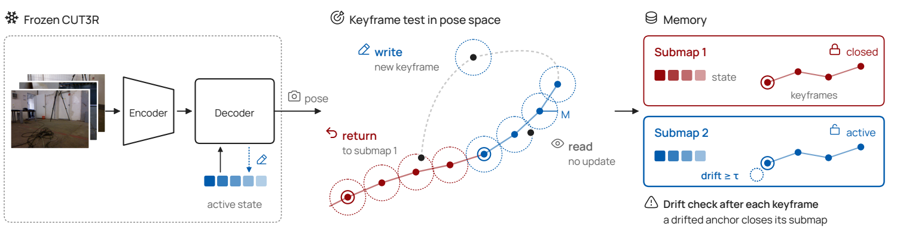

Paper Analysis
01 · Memory Capacity Is Not the Write Budget
流式模型对每帧做预测，并不要求每帧都永久修改历史。SceneBound 将预测与写入分开：当前图像仍参与解码，但其信息是否留给后续帧，由写入策略决定。研究使用冻结的 CUT3R、ZipMap、StreamVGGT 等模型，不训练新的重建网络。输出仍是逐帧相机轨迹和几何。
必须区分状态容量和累计写入预算。一个固定大小的 recurrent state 可以被修改十万次；一个 KV cache 则可能随保留帧增加。前者的字节数不变，并不代表受到的更新扰动不变；后者即使限制条目数，替换频率仍可能不同。只报告显存不能说明写入过程已经公平。
对状态模型，可将候选更新记作 cₜ，实际更新写成 sₜ=sₜ₋₁+bₜ⊙(cₜ−sₜ₋₁)。bₜ 是逐 token 增益；全帧二值 gate 的值为 0 或 1。令 βₜ 为其 token 均值，W=Σₜβₜ 衡量累计更新量，Q=Σₜmean(bₜ²) 衡量增益平方和。二值整帧写入时，两者都等于写入帧数。
作者用固定的第零帧作为 readout：在不同历史状态下重新解码它，但不把这次探测写回状态。这样测到的是历史更新造成的输出变化，而不是当前输入本身变了多少。这个量是漂移诊断，不等同于全部轨迹误差，更不是语义信息量。
Paper Analysis
02 · A Budget-Matched Diagnostic
核心对照先记录一个 gate 在完整序列上的 W、Q，再构造均匀更新：选 J≈W²/Q 个均匀位置，每次使用相同增益 g=W/J。整数 J 被限制在可实现范围内。直观上，Jg=W，Jg²≈Q，因此对照保留了更新总量和强度分布的两个统计量，却去掉了原 gate 的内容选择。
这不是一个完全在线的部署方法。它事先知道整段长度及原策略最终预算，是用于隔离因果因素的诊断参照。若把它直接称作无未来信息的在线 baseline，就改变了论文设定。作者在 549 对运行中将预算匹配误差控制在 0.3% 以内。
理论部分也有前提：单步 readout 变化受 L B βₜ 控制，且沿某个固定方向的条件期望漂移至少为 κβₜ，才得到 κE[W]≤E[漂移范数]≤LBE[W]；零均值波动的二阶量由 (LB)²E[Q] 控制。持续同向偏差是重要假设，不能从这些界推出“更多记忆必然更差”，也不能推出相同 W、Q 就有相同重建精度。
主基准有 61 个序列、51,256 帧，单段最多 1,000 帧。九种 gate 的“预算对照 ATE / gate ATE”几何均值为 0.99，范围 0.92–1.06；其中七种的配对重采样区间包含 1。比值大于 1 表示 gate 更好。TTSA3R 为 1.06，AFG-Img 为 0.92，说明并不是所有方法都等价。
这些区间来自序列配对 bootstrap，而不是多次随机训练的置信区间；模型和运行本身是确定性评测。完整 KITTI 和 TUM 序列的补充实验中，相应几何均值约为 1.12、1.13，选择信号仍有价值。因此合理结论是：必须先控制预算，再讨论选择策略，而不是宣布选择策略无效。
Paper Analysis
03 · Covering Views Instead of Counting Frames

Ziming Wang et al. · CC BY 4.0 · Original artwork extracted from PDF page 5; surrounding page text omitted · Paper & Caption ↗
原图左侧对应单状态版本：当前帧先解码，获得预测相机位姿，然后与所有已存关键帧比较。距离 d(pᵢ,pⱼ)=旋转夹角+相机中心距离/z₀；旋转使用弧度，z₀ 是首帧预测深度中位数，之后固定。只有与每个已存视点的距离都不小于 M=0.3，当前帧才成为新关键帧。
这与“距离上一关键帧足够远”不同。返回早先访问过的位置时，最近关键帧可能很远，但历史中已有近似视点；检查全部历史会拒绝再次写入。规则在近似静态、定位可靠的情况下让预算随视点覆盖增长，而不是随停留时间增长。
以覆盖数 N_d(X,M) 表示用半径 M 的球覆盖已访问预测位姿集合 X 所需数量，关键帧数量 K 满足 N_d(X,M)≤K≤N_d(X,M/2)，在相应空间条件下还能进一步界定。这是随场景覆盖变化的上界，不是与场景规模无关的固定内存上限。
覆盖发生在预测位姿空间。若位姿跳变，一个实际上已见的地方仍会被当成新区域。作者对真实位姿的扩展需要误差相对 M 足够小；附录中 KITTI 并不满足全序列条件，不能把该理论当作真实轨迹的无条件保证。
这个判据也没有描述内容变化。相机位置几乎不变而物体发生移动时，新观测可能很重要，却没有新增视点覆盖。这正是后续研究可以讨论语义与时效性的地方，但论文没有给出语义补充规则的实验。
Paper Analysis
04 · Submaps and Backbone-Specific Writes
原图右侧是子图版本。每个子图保存局部状态和首帧 anchor；新关键帧写入后，重新解码 anchor，监测其位姿 readout 漂移。超过 τ=0.1 时关闭当前子图，下一帧以新状态和新 pose memory 开始，并利用旧状态给新 anchor 定位，把局部结果放到共同坐标系。
关闭的子图不会立即丢弃；之后根据当前预测位姿与已存视点的距离选择是否返回旧子图。附录实现的切换作用于下一帧，当前帧仍由当前状态解码。这会带来额外探测与定位前向，不能把 gate 的计算开销当作整个系统开销。
不同骨干中的“拒绝写入”并不完全相同。CUT3R 限制 recurrent state 更新，但 pose memory 仍逐帧更新；ZipMap 对非关键帧在解码后恢复之前的 fast weights，因此本帧可以受自身临时更新影响，后续帧则不能。
KV 模型在当前帧解码后，从所有 aggregator 层以及 camera head 的缓存中删除非保留帧。若只裁剪主干而遗漏 camera head，预算与结果都改变。论文主比较中是否裁剪 camera head 是需要核对的配置，不能仅凭“相同关键帧数”认为缓存严格相同。
该方法没有新的学习损失，阈值与写入逻辑在推理阶段起作用。M、τ 的选择使用了部分 TUM 数据，深度单位选择也参考了主基准；这些集合与部分报告集重叠。未参与参数选择的数据集结果更适合判断泛化。
Paper Analysis
05 · Evidence from Trajectories and Revisits
ATE 是对齐后轨迹位置误差，越低越好；这里采用相似变换对齐、以米报告。主表中 CUT3R 平均 ATE 从 0.522 降到 SceneBound 的 0.080，Info3R 完整方法为 0.089。缓存侧 SceneBound 为 0.083，Retrieve 为 0.102。这些是作者报告结果，不是本地复现。
重复访问实验把序列正反向重复播放九次，状态侧使用 24 个序列，缓存侧使用 17 个。这是受控重放，不是九次独立采集的真实重访。状态侧关键帧从 678 增到 698，缓存侧从 426 增到 450，说明在这一协议下新增写入逐渐饱和。
缓存侧重复访问的 SceneBound 为 ATE 0.069、峰值显存 14.8 GB；固定间隔 50 的 ATE 为 0.067、49.6 GB。SceneBound 并非误差最低，但以较少缓存得到相近轨迹。显存统计不含预加载 RGB；若某方法转存 CPU，还必须报告主机内存，不能把 offload 当作消除存储。
相同关键帧数量下，均匀位置的状态侧 ATE 为 0.0904，SceneBound 为 0.0805，说明写入位置仍有作用。ZipMap 上却是 SceneBound 0.0890、固定间隔 50 为 0.0827、等数量均匀写入 0.0837，不能宣称覆盖规则在所有记忆类型都最优。
输入降采样也要有合适对照：固定“每 50 帧”会随帧率改变物理时间间隔；固定时间间隔更公平，附录中这一对照可以接近 SceneBound。预算规则对帧率不敏感的优势，不应与一个未校正时间尺度的 baseline 混为一谈。
| Setting | SceneBound | Comparator | Interpretation |
|---|---|---|---|
| CUT3R / mean ATE | 0.080 | 原始模型 0.522；Info3R 0.089 | 主基准上的轨迹改善 |
| Cache / nine-pass replay | 0.069 / 14.8 GB | 固定间隔 50：0.067 / 49.6 GB | 误差接近，缓存代价不同 |
| ZipMap / mean ATE | 0.0890 | 固定间隔 50：0.0827 | 覆盖选择并非普遍最优 |
Paper Analysis
06 · Where the Mechanism Stops Helping
轨迹改善不自动意味着表面更准。附录点云评测中，7Scenes 状态侧 SceneBound 的 accuracy/completeness 为 0.0258/0.0226，固定间隔 50 为 0.0238/0.0211，后者更低；NeuralRGBD 缓存侧 accuracy 也弱于 Retrieve。评估语义重建时，不能用 ATE 代替点云与边界质量。
子图内部更稳定，也不保证全局拼接更好。EuRoC 的子图版本 ATE 2.14，比单状态 1.78 更差，尽管局部段误差下降。KITTI 的局部段误差与整轨迹误差差距也很大，说明子图定位和串联仍会累积错误。
作者尝试用模型自身验证回环，再加入位姿图优化，KITTI ATE 反而从 50.7 增到 79.4。内部一致的错误预测不能替代独立证据，这对后续使用语义相似度确认回环尤其重要。
性能收益也不是纯粹来自一个完美的不确定度指标。anchor 漂移与误差的相关性在控制状态年龄后明显减弱；随着时间变旧本身就会使两者增大。必须区分“能触发有用重置”与“准确估计几何不确定性”。
总体而言，这项工作最有价值的是揭示了更新量这一混杂因素，并给出可实现的覆盖规则。其适用范围受位姿质量、动态内容、子图放置误差和覆盖规模限制；完整长期运行仍需同时统计状态、全部缓存、主机存储及额外前向成本。
Paper Analysis
07 · Implications for Semantic Memory in LingBot-Map
对写入前语义融合，首先要固定原缓存策略，比较几何基线、输出端语义融合、写入前语义融合。否则，语义模块如果恰好减少了更新次数，就可能通过降低漂移得到收益，尚不能说明保留的语义内容更有效。这是 SceneBound 给实验设计的直接提醒。
随后若增加语义 gate，应同时记录保留 token 数、累计写入次数或增益、替换频率和读取成本。除原始 baseline，还应增加同写入数量的均匀或覆盖选择；软 gate 可参考 W、Q 匹配。诊断可以使用离线预算，但部署性能必须用真正因果的策略单独报告。
容量相同仍不是全部控制：同规模普通视觉分支、非语言教师、相同训练展开长度以及输出端融合，分别排除参数、教师信息、历史梯度和当前帧增强。之后才检查长间隔重访、遮挡恢复与动态内容更新是否出现额外收益。
一个尚待验证的方向是让几何覆盖负责识别重复视点，让语义与视觉变化判断旧证据是否过时。但语义类别不等于实例身份，也不直接决定新表面是否出现。它必须与可见性和几何一致性联合使用，不能直接把 SceneBound 改名为语义 memory 并宣称已证明几何提升。
Discussion
Reading Questions
Does the paper show that gate signals are useless?
没有。主基准平均优势经预算控制后变小，但完整长序列与部分 gate 仍有收益；同数量写入的位置也影响结果。
Is the budget-matched baseline deployable online?
不是原样可部署的因果策略。它使用完整序列的最终预算和长度，是用来隔离选择因素的诊断对照。
Is SceneBound a fixed-memory method?
其预算由已访问预测视点的覆盖规模约束；探索新区域仍会增长，不是全局固定字节上限。
What is the first useful control for semantic fusion?
先固定缓存与更新规则，只改变语义融合位置；若进一步改变写入策略，再匹配更新预算，并独立评估几何和运行成本。
References
- Original Paper ↗
- Read Version ↗
- Related Note: LingBot-Map ↗
- Related Note: Semantic Memory Supervision ↗
One original figure is reproduced under CC BY 4.0. Numerical results are author-reported. Connections to semantic memory are proposed analyses, not completed experiments.
Verified on 2026-11-05. Paper results refer to the linked versions. Repository references were checked on this date.